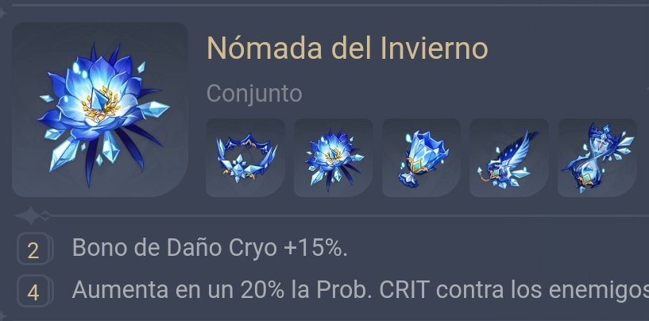
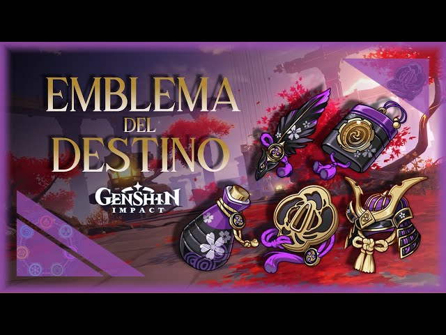
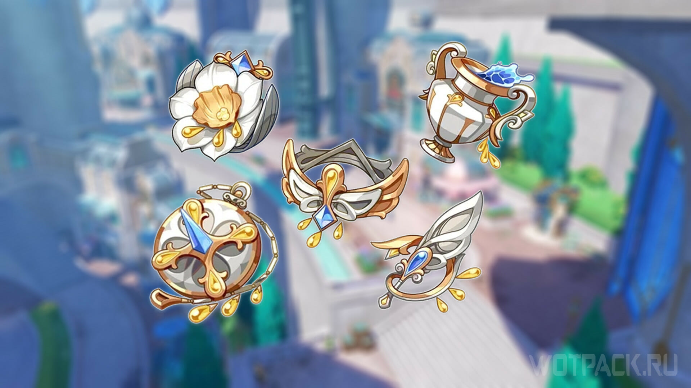
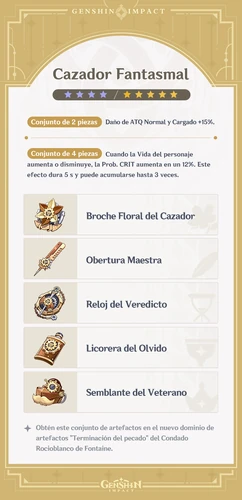
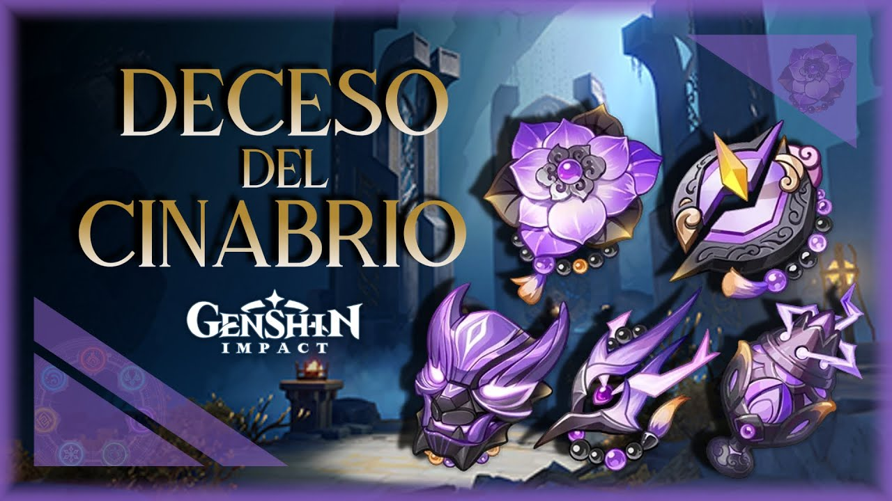
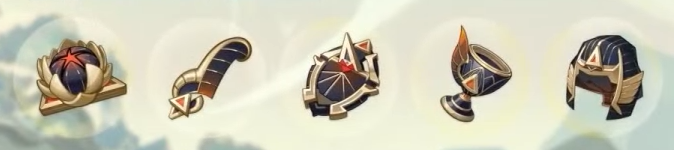

2 piezas Bono de Daño Cryo +15%. 4 piezas Aumenta en un 20% la Prob. CRIT contra los enemigos afectados por Cryo. Si el enemigo está Congelado, la Prob. CRIT aumentará en un 20% adicional.
2 piezas Recarga de Energía +20%. 4 piezas Aumenta el daño infligido con la Habilidad Definitiva en una cantidad equivalente al 25% de la Recarga de Energía. Se puede obtener un aumento del 75% como máximo.
2 piezas Daño de Habilidad Elemental +20%. 4 piezas Aumenta en un 20% el daño infligido con la Habilidad Elemental. Además, cuando el personaje está en tu equipo pero no en combate, el daño de dicha habilidad aumenta en un 20% adicional. Este efecto se anula 2 s después de entrar en el campo de batalla.
2 piezas Daño de Ataque Normal y Cargado +15%. 4 piezas Cuando la Vida del personaje aumenta o disminuye, la Prob. CRIT aumenta en un 12%. Este efecto dura 5 s y puede acumularse hasta 3 veces.
2 piezas ATQ +18%. 4 piezas Al usar la Habilidad Definitiva, obtienes el efecto de "destello emergente" durante 16 segundos, el cual aumenta el ATQ en un 8% y, además, hace que cada vez que el personaje pierda Vida, su ATQ aumente en un 10% adicional. Este efecto solo puede aumentar el ATQ un máximo de 4 veces de esta manera y activarse una vez cada 0.8 s. Los efectos de destello emergente se disiparán si el personaje es retirado de combate. Si el personaje vuelve a usar la Habilidad Definitiva mientras dicho efecto está activo, el destello emergente original también se disipará.
2 piezas Maestría Elemental +80 pts. 4 piezas Tras causar una Reacción Elemental, el personaje que lleve equipado este conjunto obtiene durante 8 segundos los siguientes fortalecimientos en función de los tipos elementales de los miembros del equipo: por cada personaje del mismo tipo elemental que el portador de este conjunto, el ATQ aumenta en un 14%; por cada personaje de tipo elemental distinto al portador de este conjunto, la Maestría Elemental aumenta en 50 pts. Cada uno de estos efectos se calcula para un máximo de 3 personajes. Este efecto solo se puede activar una vez cada 8 segundos, y se activará incluso cuando el personaje que lleva este conjunto equipado esté en tu equipo pero no en combate.
